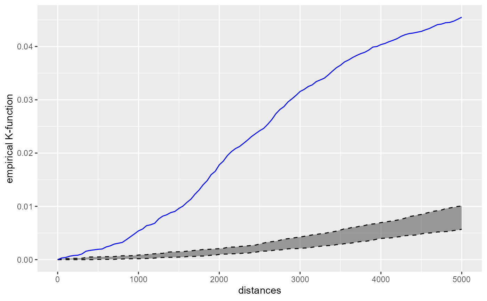
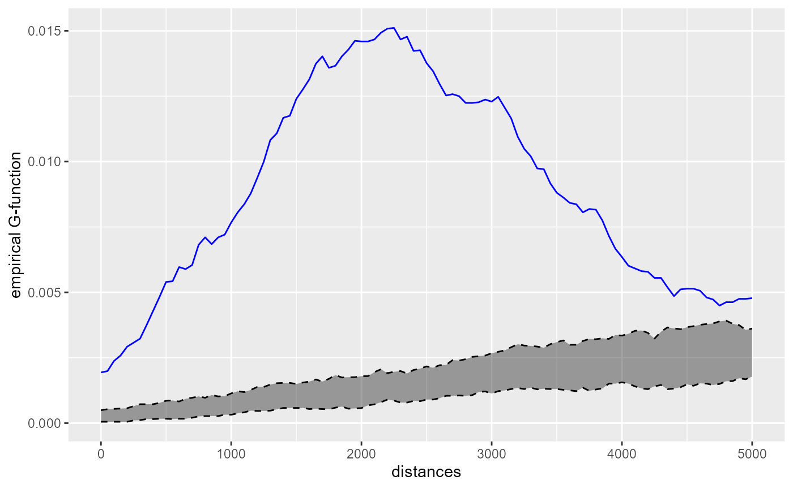
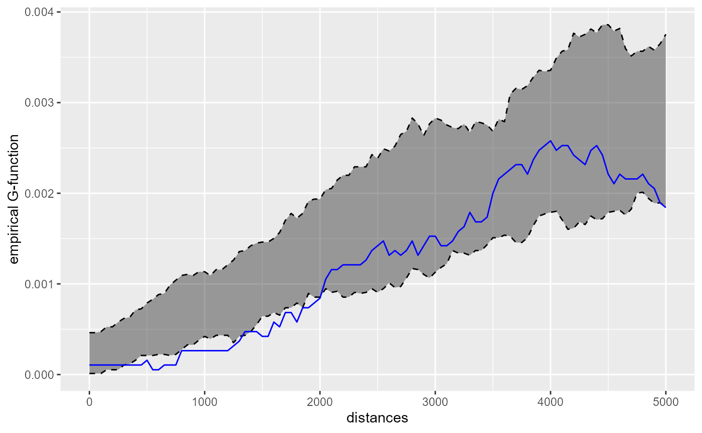
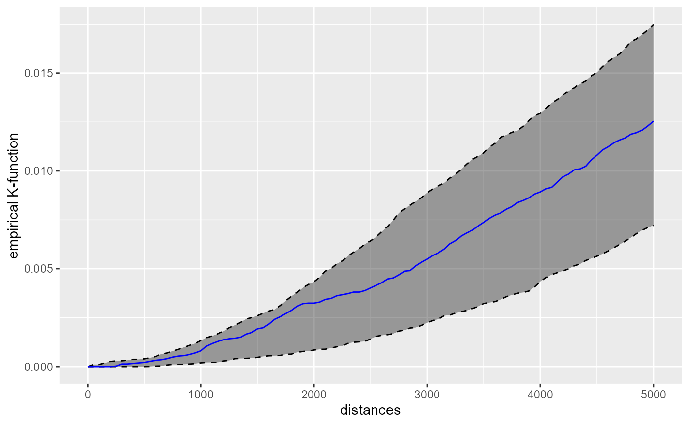
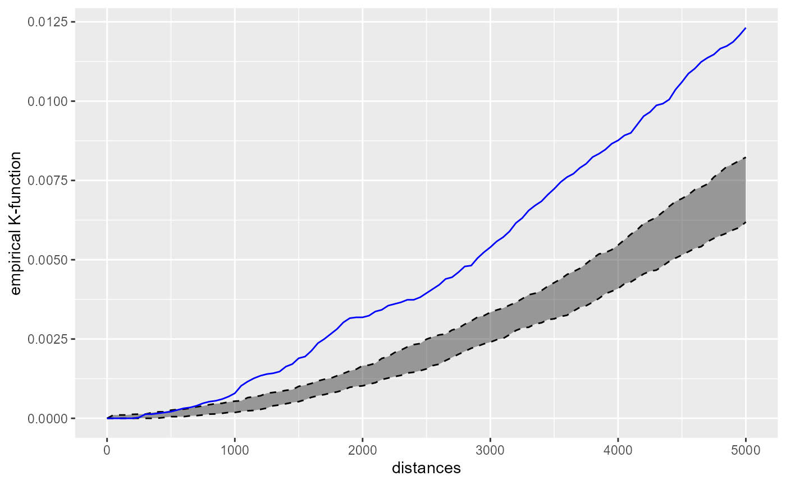

vignettes/KNetworkFunctions.Rmd
KNetworkFunctions.RmdThe K-function is a method used in spatial Point Pattern Analysis (PPA) to inspect the spatial distribution of a set of points. It allows the user to assess if the set of points is more or less clustered that what we could expect from a given distribution. Most of the time, the set of point is compared with a random distribution.
The empirical K-function for a specified radius \(r\) is calculated with the following formula:
\[\hat{K}(r)=\frac{1}{n(n-1)} \sum_{i=1}^{n} \sum_{j=1 \atop j \neq i}^{n} \mathbf{1}\left\{d_{i j} \leq r\right\}\] Basically, the K-function calculates for a radius \(r\) the proportion of cells with a value bellow \(r\) in the distance matrix between all the points \(D_{ij}\). In other words, the K-function estimates “the average number of neighbours of a typical random point” (Baddeley, Rubak, and Turner 2015).
A modified version of the K-function is the G-function (Pair Correlation Function) (Stoyan and Stoyan 1996). The regular K-function is calculated for subsequent disks with increasing radii and thus is cumulative in nature. The G-function uses rings instead of disks and permits the analysis of the points concentrations at different geographical scales.
When the points are located on a network, the use of the Euclidean distance systematically underestimates the real distance between points. These two functions can be extended for network spaces by using the network distance instead of the Euclidean distance. The value of the empirical k function on a network is calculated with the following formula:
\[\hat{K}(r)=\frac{1}{(n-1)/Lt} \sum_{i=1}^{n} \sum_{j=1 \atop j \neq i}^{n} \mathbf{1}\left\{d_{i j} \leq r\right\}\]
With \(Lt\) the total length of the network and \(n\) the number of events.
It is possible to calculate the K and G functions with spNetwork with the function kfunctions. The inference is based on Monte Carlo simulations. The observed K and G function are graphically compared to n simulated dataset for which the points are randomly located on the network.
We present here a short example with the case of theatres and libraries in Montreal.
library(spNetwork)
networkgpkg <- system.file("extdata", "networks.gpkg",
package = "spNetwork", mustWork = TRUE)
eventsgpkg <- system.file("extdata", "events.gpkg",
package = "spNetwork", mustWork = TRUE)
main_network_mtl <- rgdal::readOGR(networkgpkg,layer="main_network_mtl", verbose = FALSE)
mtl_libraries <- rgdal::readOGR(eventsgpkg,layer="mtl_libraries", verbose = FALSE)
mtl_theatres <- rgdal::readOGR(eventsgpkg,layer="mtl_theatres", verbose = FALSE)
par(mar = c(0, 0, 0, 0))
sp::plot(main_network_mtl)
sp::plot(mtl_libraries, col = "blue", add=T, pch = 20)
sp::plot(mtl_theatres, col = "red", add=T, pch = 20)As one can see, the theatres seems to be more clustered than the libraries.
kfun_theatre <- kfunctions(main_network_mtl, mtl_theatres,
start = 0, end = 5000, step = 50,
width = 1000, nsim = 50, resolution = 50,
verbose = FALSE, conf_int = 0.05)
kfun_theatre$plotk
The blue line is the empirical network K-function of the theatres in Montreal. The gray area represents the results of the 50 simulations in the interval 2.5% - 97.5%. Because the blue line is way above the gray area, we can conclude that the theatres are more clustered than what we can expect from a random distribution. (Note: usually, more simulations are required for inference).
kfun_theatre$plotg
The G-function is also indicating a clustering situation, which is maximum between two and three kilometres. This is consistent with the fact that we have a high concentration of theatres in the central neighbourhoods and then more dispersed points. We can perform the same analysis for libraries.
kfun_biblio <- kfunctions(main_network_mtl, mtl_libraries,
start = 0, end = 5000, step = 50,
width = 1000, nsim = 50, verbose = FALSE)
kfun_biblio$plotkFor distances bellow two kilometres, the libraries are a bit dispersed. Above two kilometres, the libraries tend to be randomly located. The chart of the G-function confirms this observation, but with a lower limit (1.3 km) :
kfun_biblio$plotg
The cross-K-function is used to determine if two set of points A and B tend to be close or far away one from each other. For a radius r, the empirical cross-K-function is calculated with the following formula :
\[\hat{K}(r)=\frac{1}{n_a n_b)} \sum_{i=1}^{n_a} \sum_{j=1}^{n_b} \mathbf{1}\left\{d_{i j} \leq r\right\}\]
On a network, the formula is adapted:
\[\hat{K}(r)=\frac{1}{n_a/Lt} \sum_{i=1}^{n_a} \sum_{j=1}^{n_b} \mathbf{1}\left\{d_{i j} \leq r\right\}\]
with \(n_a\) the number of points in A and \(n_b\) the number of points in B, and \(Lt\) the total length of the network.
Note that the cross-K-function A to B is not necessarily the same results as the cross-K-function B to A. Again, in spNetwork, the inference is based on Monte Carlo Simulations. The locations of the reference set of points are randomized to estimate if the current situation is more or less clustered that what we could expect at random.
cross_biblio_theatre <- cross_kfunctions(main_network_mtl, mtl_libraries,
mtl_theatres, start = 0, end = 5000, step = 50,
width = 1000, nsim = 50, verbose = FALSE)
cross_biblio_theatre$plotk
One can conclude from the chart that the libraries are randomly located around the theatres and display nor clustering nor dispersion around theatres.
cross_theatre_biblio <- cross_kfunctions(main_network_mtl, mtl_theatres,
mtl_libraries, start = 0, end = 5000,
step = 50, width = 1000, nsim = 50, verbose = FALSE)
cross_theatre_biblio$plotk
However, this second chart shows that the theatres tend to be clustered around libraries. This is coherent with the map above. A random library is often located far from the theatres. But the theatres are concentrated in the city centre and close to some specific libraries.
Baddeley, Adrian, Ege Rubak, and Rolf Turner. 2015. Spatial Point Patterns: Methodology and Applications with R. CRC press.
Stoyan, Dietrich, and Helga Stoyan. 1996. “Estimating Pair Correlation Functions of Planar Cluster Processes.” Biometrical Journal 38 (3): 259–71.